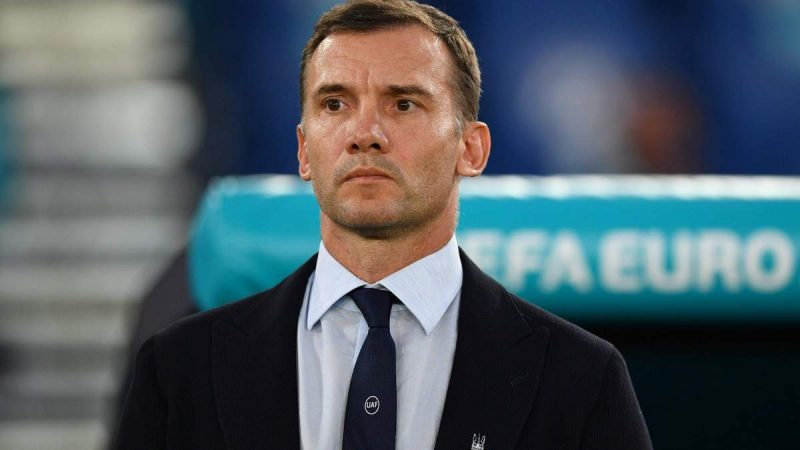
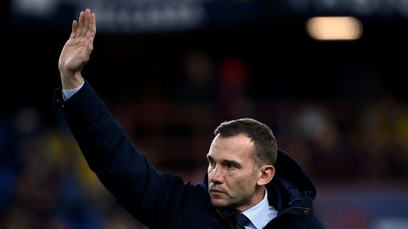
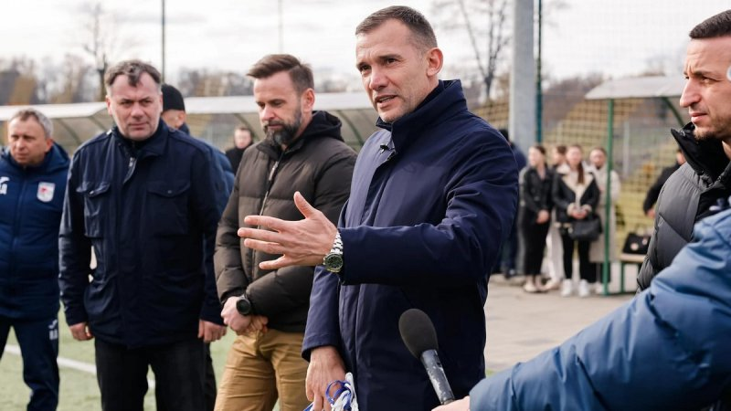
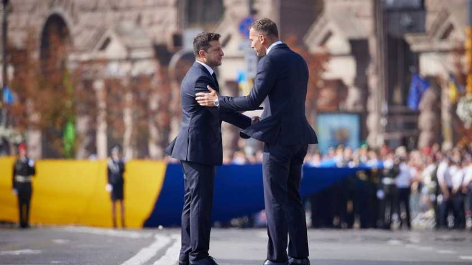

Шевченко Андрій Миколайович

Андрі́й Микола́йович Шевче́нко (нар. 29 вересня 1976, с. Двірківщина, Яготинський район, Київська область,
Українська РСР, СРСР) — український футболіст, що грав на позиції нападника за київське «Динамо», «Мілан» та
лондонський «Челсі».
Зміст:
Кар'єра гравця
«Динамо» (Київ) (1994—1999)
1990 року 14-річні «динамівці» виграли Кубок Іана Раша в Уельсі, а Шевченко став найкращим бомбардиром турніру
і отримав пару бутсів із рук самого Іана Раша. 1991 року «динамівські» юнаки перемогли у чемпіонаті СРСР серед
хлопців 1976 р. н. Команда їздила на міжнародні турніри до Європи, зокрема
зіграла на міланському «Сан-Сіро».
Перша поява Андрія Шевченка в дорослому футболі відбулася у сезоні 1992/93. Із 12 м'ячами він став найкращим
бомбардиром першолігової команди «Динамо-2». Потім його запросили в молодіжну збірну України, і він з'явився
у вищій лізі — вперше вийшов на заміну 8 листопада 1994 року (гра з «Шахтарем»).
Тоді команду «Динамо» тренував Йожеф Сабо.
Українець посів 3-є місце в опитуванні «Золотого м'яча» 1999. Нападника випередили тільки Рівалдо і Девід Бекхем.
«Мілан» (1999—2006)
29 серпня 1999 — дебют у Серії «А» в матчі «Лечче» — «Мілан» (2:2). У перший же сезон стає найкращим
бомбардиром Серії «А», забивши 24 м'ячі в 32 іграх чемпіонату, залишивши позаду таких голеадорів,
як Батістута (23 м'ячі) і Креспо (22).
15 жовтня 1999 року нагороджений орденом «За заслуги» III ступеня. Національна команда саме завершувала
відбір до чемпіонату Європи 2000. Ситуація у групі була такою: Україна — 19 очок, Росія і Франція — по 18.
Переможець виходив до ЧЄ напряму, а друга команда мала грати у плей-оф. Французи грали вдома з Ісландією,
а українці їхали до Москви. Тобто нічия у вирішальному матчі гарантувала принаймні місце у плей-оф.
Росія тиснула і мала очевидну перевагу — завдяки рикошету після штрафного на 75-й хвилині забив Валерій Карпін.
Надії майже не було, але все змінив гол Андрія Шевченка — звичайний штрафний здалеку та із самої бокової лінії
завершився голом. М'яч полетів не на голови партнерів, як, мабуть, очікував воротар господарів Олександр Філімонов,
а в площину воріт. Голкіпер вийшов надто далеко і, повертаючись, не зафіксував м'яч та залетів з ним до воріт.
Це сталося на 88-й хвилині. Відтоді в Україні подібний штрафний з лівого флангу називають «точкою Шевченка».
«Челсі» (2006—2008)
«Челсі», власником якого був Роман Абрамович, виплатив за 29-річного нападника 30,8 млн англійських фунтів
(близько 45 млн євро). Таким чином українець стає найдорожчим трансфером в історії британського футболу
і входить до десятки найдорожчих переходів усіх часів
23 серпня 2008 року італійська «Корр'єре делло Спорт» повідомила, що узгоджено умови повернення Шевченка
до «Мілана» на правах оренди.[19] Офіційна вебсторінка «Челсі» того ж дня підтвердила це і зазначила, що гравцю
залишилося лише пройти медичне обстеження.
Тренер
Збірна України (2016—2021)

У липні 2016 Шевченко заявив, що відмовиться від товариського матчу зі збірною Грузії перед відбором на
чемпіонат світу 2018. Зрештою у групі Україна посіла третє місце, пропустивши вперед команди Ісландії
та Хорватії.
За даними УАФ, під час роботи в збірній Шевченко заробив 12,5 млн євро (400 млн грн)[34].
«Дженоа»

7 листопада 2021 року оголосили про призначення Шевченко головним тренером представника італійської Серії A
«Дженоа». 15 листопада він здобув першу перемогу на чолі нового клубу. Підопічні українського наставника
приймали на своєму полі «Салернітану» та виграли з мінімальним результатом 1:0.
Після звільнення Шевченко повідомляли, що футбольний клуб заплатить його тренерському штабу 20 млн євро.
Президент Української асоціації футболу
З 25 січня 2024 року Шевченко одноголосно був обраний Президентом Української асоціації футболу.